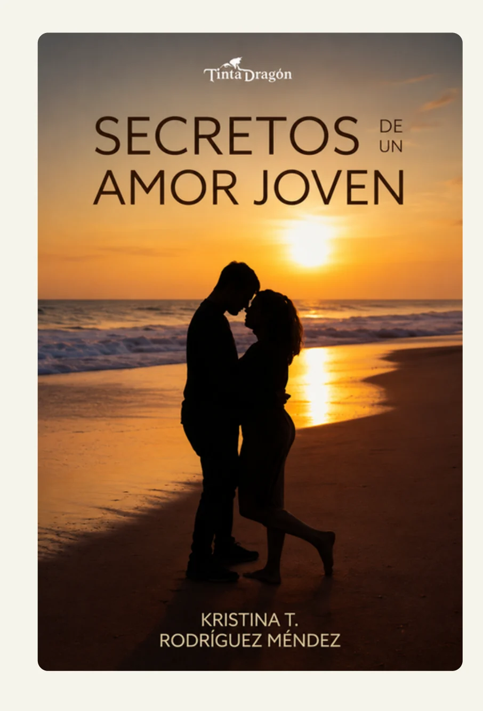

Secretos de un amor joven
No hay amor que no arrastre consigo la posibilidad de perderse, de fracturarse, de doler. Amar, a veces, es también desangrarse. Pero toda herida, incluso la más honda, puede convertirse en una grieta por donde se filtra la luz. Después del derrumbe, puede quedar la nada. O puede quedar el deseo, urgente y feroz, de reconstruirse.
De esto último se trata Secretos de un amor joven.
Una novela epistolar que nos arrastra al territorio íntimo de un diario adolescente. La protagonista, como alguien que descubre el amor por primera vez, nos invita a recorrer con ella su historia. Derrama sus vivencias como quien exorciza fantasmas y describe, con la crudeza digna de la prosa de los dieciséis años, cómo el revoloteo de mariposas se enreda en una telaraña de manipulación y angustia, tan frecuente como silencioso en la vida de muchas.
Con el paso del tiempo, atestiguamos un viaje emocional que se tambalea entre la ilusión y el desencanto, el apego y la ruptura, lo vulnerable y el anhelo, desesperado, de la libertad. Con una voz desgarradora y honesta, la narradora desciende a los abismos de un amor tóxico, se hunde en los ciclos asfixiantes de la dependencia emocional y emprende el arduo y lento camino hacia la reconstrucción personal.
Este es el relato de las cicatrices que deja el amor cuando no es amor. De la fortaleza de quienes saben quebrar las cadenas. Del poder silencioso y redentor del amor propio como única llave para despertar.
La escritura, tan antigua como el dolor, se convierte en espejo. Fragmentado, sí. Pero capaz de devolver una imagen transformada.
Podés leerla en la página de la editorial haciendo click acá.